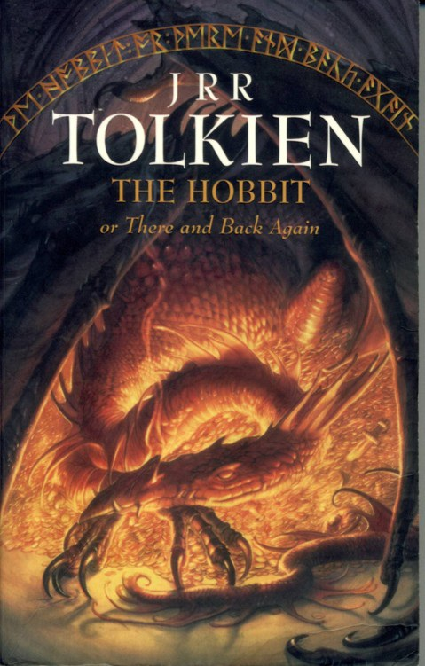

BÖLÜCD 8
s ı w e k L e R v e ö ^ ü c n c e k L e R
Tek sıra halinde yürüdüler. Patikanın
girişi, bir iki kararmış yapraktan
fazlasını beslemeyecek denli yaşlı,
sarmaşıklarla sarılmış ve likenlerle
boğulmuş iki büyük ağacın birbirine
yaslanarak oluşturduğu, kasvetli bir
tünele açılan bir tür kemere benziyordu.
Patika ise dardı ve ağaç gövdelerinin
arasından kıvrıla büküle ilerliyordu,
Girişteki ışık çok geçmeden uzaklarda
küçük parlak bir delik gibi kaldı ve
sessizlik o kadar derinleşti ki tüm
ağaçlar üzerlerine eğilir ve dinlerken
ayaklan güm güm sesler çıkartıyormuş
gibi gelmeye başladı.
. Gözleri loşluğa alıştıkça koyu yeşil
donuk bir parlaklıkta iki tarafı da biraz
görebilir oldular. Arada bir epeyce
yukarlardaki yaprakların arasında bir
açıklıktan sızma şansım elde etmiş ve
hatta arapsaçı gibi dolanmış kalın dallar
ve altlannda birbirine sarılmış
sürgünlere de takılmamış olmakla daha
da şanslı zayıf bir tutam gün ışığı cılız
bir parlaklıkla önlerini kesiyordu.
Ancak bu nadiren oluyor ve kısa bir süre
sonra da her şey eskiye dönüyordu.
Ormanda kara sincaplar vardı.
BÜbo'nun keskin, meraklı gözleri bir
şeyleri görmeye alıştıkça sincapların
yoldan fırlayıp ağaç gövdelerinin
arkasına kaçışmalarını fark
edebiliyordu. Acayip sesler de vardı,
yani çalıların ya da ormanın zemininde
yer yer kalın bir tabaka halinde
öbeklenmiş yapraklar arasındaki
hırıldanmalar, ayak